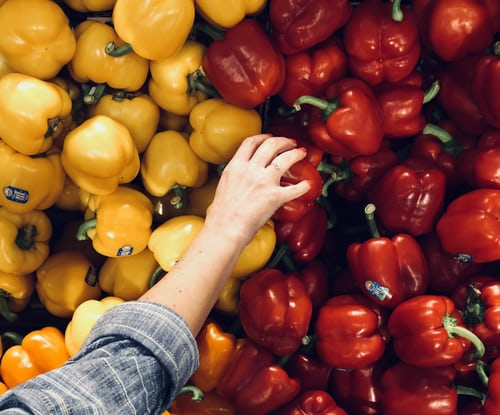
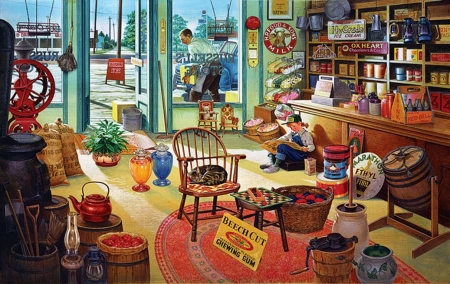
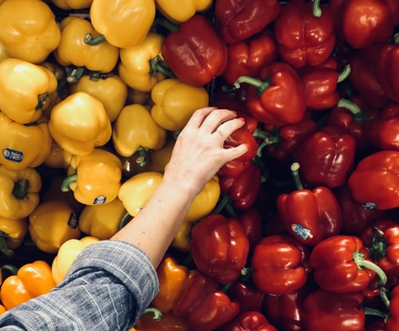
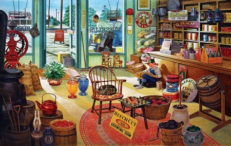

Wheat, rice, pulses, oil, cosmetics, etc. are the part of the life such that they can not be seen as different from life. These products are available quickly and frequently at any store, every store has their set of glossary products which need to be managed properly in such a way that as one customer come to take the product the items can be easily removed and collected at a place, then it needs to be set according to the price. Here what this system does is in this system we can see the items like wheat, rice, pulses, soap and any other product according to the attributes like type, brand, category, price, etc. So that using system it can be located quickly and give instructions to staff to take out the products and the total of the goods are presented in the order table to total the price. The bill is made on that basis and given to the customers. The admin maintains the detail of the clients and staff . can be the counter manager or any staff. In this way, this gives a sense of management to the store and brisk the pace of work.